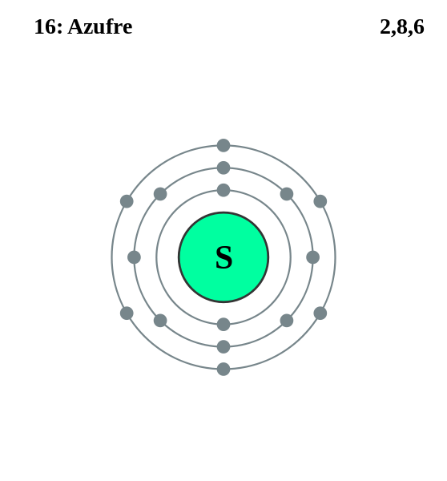

|
|
||
|
AZUFRE Es un sólido inodoro, de color amarillo pálido y frágil que es insoluble en agua, pero es soluble en sulfuro de carbono. Se puede encontrar en varias formas: gaseosa, líquida o sólida. El azufre de alta pureza está disponible comercialmente en purezas superiores al 99,999 %. Existen once isótopos de azufre y los cuatro que se encuentran en la naturaleza son radioactivos. Se encuentra de forma natural en las proximidades de los volcanes y aguas termales. Se encuentra en las piritas, la galena, la esfalerita, el cinabrio, la estibina, el yeso, las sales de Epsom, la celestina, la baritina y otros minerales. |
 |
DATOS Número Atómico: 16 Peso Atómico: 32.07 Electronegatividad: 2.58 Configuración Electrónica: [Ne]3s23p4 Estados de Oxidación: -2 No. de Electrones de Valencia: 6 |